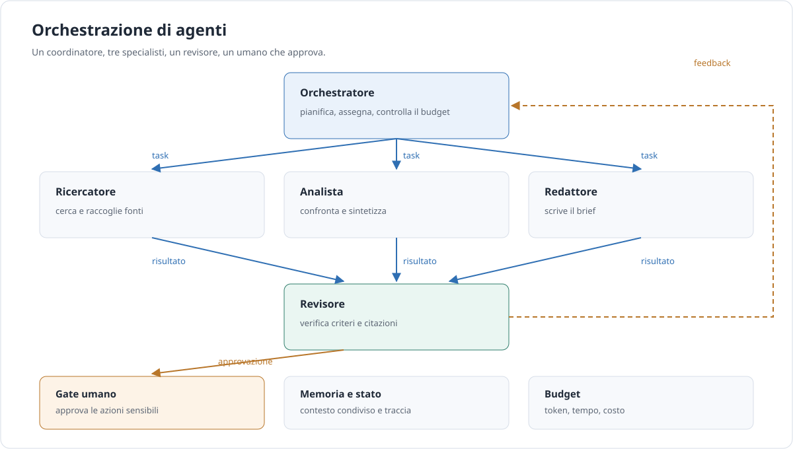

Approfondimento · AI
Agenti e orchestrazione
Un agente non è un modello più intelligente: è un modello che può agire, osservare il risultato e riprovare. L’orchestrazione aggiunge altri agenti, ma anche costo, latenza e modi nuovi di sbagliare. Qui c’è come progettare la gerarchia senza costruire una fabbrica di token.
In breve. Un workflow segue percorsi che hai scritto tu. Un agente decide il percorso. Il secondo è più flessibile e più costoso; spesso il primo basta. La domanda non è “posso usare un agente?”, ma “mi serve che decida?”.
Agente o workflow
Un workflow è una sequenza di passi decisa da te: leggi, estrai, valida, scrivi, invia. Il modello può partecipare a ogni passo, ma non decide l’ordine. Un agente ha un ciclo: osserva lo stato, decide la prossima azione, la esegue, verifica il risultato. L’ordine emerge dal ciclo, non da un diagramma.
Il ciclo ha bisogno di tre cose per non diventare un problema. I tool: cosa può fare. Le stop condition: quando fermarsi. Il budget: quanto può spendere in token, tempo e denaro. Senza una delle tre, l’agente è un’automazione che non sai controllare.
La maggior parte dei compiti non richiede un agente. Se puoi scrivere una funzione, fallo invece di usare un agente: è la regola che Microsoft Agent Framework ripete, ed è anche la conclusione di Anthropic in Building effective agents. Una regola, una query, una singola chiamata con retrieval: sono tutte soluzioni più semplici, più veloci e più facili da testare.
Un esempio concreto. Un workflow di assistenza clienti: leggi il messaggio, classifica la richiesta, cerca nella knowledge base, proponi una risposta, chiedi conferma se l’importo supera una soglia. Ogni passo è prevedibile e testabile. Un agente per lo stesso compito deciderebbe da sé se cercare, quante volte, e quando fermarsi: più flessibile, ma molto più difficile da misurare. Se il 90% delle richieste segue cinque percorsi, il workflow è la scelta giusta e l’agente è un lusso.
Il confine tra i due mondi non è una linea netta: molti sistemi sono workflow con un passo agentico dentro, di solito il più incerto. Questa è spesso la forma più sana, perché lascia il controllo dove serve e l’autonomia dove il percorso non è prevedibile. Il resto è una scommessa sul fatto che il modello indovini l’ordine giusto.
Un agente conviene quando il percorso non è noto in anticipo e le decisioni dipendono da ciò che si trova strada facendo. Conviene anche quando il numero di passi è variabile: un workflow con venti rami è difficile da mantenere, un agente con un buon criterio di stop può essere più semplice. Il confine non è filosofico: è una stima di quanto costa scrivere e mantenere i rami.
I cinque pattern
Questi pattern vengono da Anthropic e sono diventati un vocabolario comune. Non sono esclusivi: un sistema reale ne combina due o tre.
| Pattern | Uso tipico | Costo | Rischio | Quando evitarlo |
|---|---|---|---|---|
| Prompt chaining | Passi in sequenza, ognuno con un controllo. | Latenza e token sommati. | Un passo sbagliato rovina i successivi. | Quando i passi sono indipendenti. |
| Routing | Tipi di richiesta diversi verso gestori diversi. | Un classificatore da valutare. | Classificazione sbagliata e silenziosa. | Quando le richieste sono omogenee. |
| Parallelization | Sottocompiti indipendenti o voti multipli. | Molte chiamate insieme. | Risultati da riconciliare. | Quando c’è una dipendenza stretta. |
| Orchestrator-workers | Un coordinatore assegna a specialisti. | Token e coordinamento. | Lavoro duplicato, contesto perso. | Quando il compito sta in una chiamata. |
| Evaluator-optimizer | Un modello produce, un altro valuta e corregge. | Almeno due chiamate per giro. | Loop senza criterio di uscita. | Quando non esiste una rubrica chiara. |
I pattern si combinano. Un orchestratore usa il routing per scegliere lo specialista, la parallelizzazione per raccogliere fonti, il ciclo evaluator per controllare la bozza. Il rischio è che ogni aggiunta sembri piccola e l’insieme diventi un sistema che nessuno riesce a spiegare. La regola è tenere un diagramma aggiornato e un test per ogni freccia: se non sai dire cosa succede quando una freccia si rompe, non hai capito il sistema.
L’human-in-the-loop non è un pattern a sé: è un controllo trasversale. Può essere un’approvazione prima di un’azione irreversibile, una revisione a campione o un pulsante di stop. Va progettato insieme al resto, non aggiunto dopo il primo incidente.
Costruire una gerarchia
Una gerarchia utile ha sei livelli, non uno. L’orchestratore pianifica e assegna. Gli specialisti fanno un lavoro ciascuno. I tool eseguono azioni. La memoria e stato conservano ciò che serve tra i passi. Il revisore verifica criteri e fonti. L’umano approva ciò che non è reversibile.
Un esempio leggibile: Coordinatore → Ricercatore / Analista / Redattore → Revisore → Umano. Il coordinatore non scrive: assegna. Il ricercatore non decide: raccoglie. L’analista non inventa: confronta. Il redattore non approva: scrive. Il revisore non produce: controlla. L’umano non esegue: decide.
Tra un livello e l’altro serve un contratto. Non basta dire “passa il risultato”: il risultato deve avere una forma verificabile. Un contratto JSON minimo:
{
"task_id": "brief-2026-11-11",
"obiettivo": "Produrre un brief di 800 parole sulle fonti raccolte.",
"input": {
"fonti": ["fonte-1", "fonte-2"],
"vincoli": ["citare ogni fonte", "nessun dato personale"]
},
"schema_output": {
"testo": "string",
"citazioni": ["string"],
"incertezze": ["string"]
},
"budget": { "token": 120000, "minuti": 20, "costo_usd": 2.5 },
"scadenza": "2026-11-11T18:00:00Z"
}Le stop condition vanno scritte prima di iniziare. Le più comuni: output validato, budget esaurito, conflitto non risolvibile, richiesta di approvazione. Ognuna deve essere verificabile da un controllo, non dalla buona volontà del modello.
L’escalation è la valvola di sicurezza: incertezza alta, azione irreversibile, dati sensibili, evidenze contraddittorie. In quei casi l’agente si ferma e chiede. Non è una sconfitta: è il comportamento corretto di un sistema che sa di non sapere.
La memoria è la parte più sottovalutata. Un agente che ricomincia da zero a ogni passo non è un agente: è una funzione con la memoria corta. Ma una memoria troppo grande è altrettanto dannosa: porta dentro dettagli vecchi, aumenta il costo e confonde il compito. La memoria giusta è un riassunto dello stato — obiettivo, decisioni prese, fatti verificati, domande aperte — non una trascrizione integrale.
Lo pseudocodice dell’orchestratore tiene insieme tutto:
funzione orchestratore(obiettivo, budget):
piano = pianifica(obiettivo)
risultati = []
per ogni task in piano:
se budget.esaurito():
interrompi("budget")
risultato = assegna(task)
se non valido(risultato):
risultato = riprova(task, una_volta)
se non valido(risultato):
interrompi("output_non_valido")
risultati.aggiungi(risultato)
bozza = redigi(risultati)
revisione = revisa(bozza, criteri)
se revisione.esito == "bloccato":
chiedi_umano(revisione)
restituisci bozzaNota cosa non c’è: nessun framework, nessun nome di prodotto, nessuna magia. La gerarchia è un contratto tra parti che possono fallire, e il codice che la implementa deve gestire i fallimenti.

Quanto costa davvero
I numeri di Anthropic sono utili perché danno l’ordine di grandezza. Un agente usa circa 4× i token di una chat; un sistema multi-agente circa 15×. Il consumo di token spiega l’80% della varianza nei risultati di BrowseComp. In un loro eval interno di ricerca, un sistema multi-agente ha superato un singolo agente del 90,2%.
Sono risultati di Anthropic, su compiti di ricerca ampia e parallelizzabile, non una legge universale. Il messaggio operativo è però chiaro: il multi-agente paga quando il compito è di alto valore, parallelo e con contesti che non stanno in una finestra. Non paga per tutto il resto.
Le leve per tenere il conto sotto controllo sono quattro. La context isolation: ogni worker vede solo ciò che gli serve. Il caching: le parti stabili non si pagano due volte. I modelli piccoli per i worker: il coordinatore può essere forte, i lavori meccanici no. Il budget per task: un tetto esplicito, verificato dal codice, non stimato a fine giornata.
Un sistema multi-agente senza queste leve è un modo elegante di moltiplicare una bolletta. Se non sai dire quale agente ha consumato cosa, non hai un sistema: hai un conto aperto. La metrica da guardare non è il costo per chiamata, ma il costo per compito riuscito: un sistema che costa il doppio e riesce il triplo delle volte è un affare; uno che costa il doppio e riesce uguale è un esperimento che non ha funzionato.
Vale anche per la latenza. Un multi-agente che risponde in due minuti quando l’utente ne aspetta venti secondi è un sistema inutilizzabile, anche se il risultato è migliore. La latenza si progetta: parallelizzare i worker, usare il modello piccolo per i passi meccanici, mostrare un avanzamento invece di una schermata ferma.
Affidabilità e controllo
Gli errori non sono tutti uguali. Un errore di modello è una risposta sbagliata o incompleta. Un errore di tool è una chiamata che fallisce o restituisce dati inattesi. Un errore di coordinamento è un lavoro duplicato, un contesto perso, un ordine sbagliato. Le contromisure sono diverse, e vanno distinte nei log.
| Rischio | Controllo |
|---|---|
| Loop infinito | Stop condition e numero massimo di iterazioni. |
| Costo fuori controllo | Budget per task, cap giornaliero, allarme al superamento. |
| Azione irreversibile | Approvazione umana e idempotenza. |
| Tool troppo potenti | Permessi minimi e allowlist. |
| Dati sensibili | Redazione, sandbox, nessun segreto nel contesto. |
| Errore silenzioso | Tracing, log strutturati, campionamento delle risposte. |
| Regressione | Eval prima e dopo ogni modifica. |
Per un agente la valutazione cambia forma: non basta giudicare la risposta finale, bisogna guardare la traiettoria. Due esecuzioni possono produrre lo stesso output, una con tre passi corretti e una con dodici passi fortunati; la seconda costa quattro volte tanto e si romperà al primo cambiamento. Registra la sequenza delle azioni e confrontala con una traiettoria attesa, non solo con il risultato.
Il retry è utile solo se l’operazione è idempotente. Ripetere una lettura non cambia nulla; ripetere un’email la invia due volte. Per le scritture serve una chiave di idempotenza che il destinatario riconosca. Lo stesso vale per i tool: un tool che crea un ordine deve accettare un identificativo di richiesta e restituire lo stesso risultato se lo riceve di nuovo.
I permessi vanno pensati per agente, non per sistema. Il ricercatore legge; il redattore scrive su una bozza; nessuno dei due invia. Il revisore non modifica. L’umano è l’unico che approva. Se un agente ha più permessi di quelli che gli servono, un errore di modello diventa un incidente.
Il tracing è la differenza tra “ha funzionato” e “sappiamo perché”. Una traccia completa registra il task, l’agente, il tool, l’input, l’output, la durata e il costo. Senza traccia, ogni incidente diventa un’indagine.
Attenzione. Un agente senza stop condition è un ciclo infinito che paga. Il modello non sa quando smettere se non gli hai detto come riconoscerlo. La stop condition è parte del progetto, non un’opzione.
Framework e strumenti
I framework risolvono problemi diversi. Sceglierne uno è meno importante che capire quale problema hai: stato, ruoli, permessi, tracciamento, integrazione con il linguaggio che usi.
| Framework | Modello | Punto forte | Costo e rischio | Quando |
|---|---|---|---|---|
| LangGraph | Grafo di stato con nodi e archi. | Orchestrazione low-level, durable execution, streaming, human-in-the-loop. | Non prescrive prompt né architettura: devi progettare tu. | Agenti stateful di lunga durata. |
| CrewAI | Crew con ruoli e task; processi sequenziali o gerarchici. | Modello mentale semplice, Flows event-driven. | Il manager LLM aggiunge costo e imprevedibilità. | Team di agenti con ruoli chiari. |
| OpenAI Agents SDK | Agenti, handoff, guardrail, tracing. | Leggero, Python e TypeScript, tracing incluso. | Ecosistema legato al fornitore. | Workflow multi-agente snelli. |
| Claude Agent SDK | Il loop di Claude Code come libreria. | Tool, permessi, sessioni, hook già risolti. | Opinionato sul loop e sull’ambiente. | Agenti che lavorano su file e comandi. |
| Microsoft Agent Framework | Agenti e workflow multi-agente in .NET, Python e Go. | Workflow espliciti, stato, human-in-the-loop. | Superficie ampia, ecosistema in evoluzione. | Contesti enterprise con più linguaggi. |
Microsoft Agent Framework è il successore diretto di AutoGen e Semantic Kernel: chi arriva da quei progetti trova un percorso di migrazione, non un’alternativa in più.
Un criterio pratico: scegli il framework che ti lascia ispezionare lo stato. Se non puoi vedere a che punto è un’esecuzione, cosa ha prodotto ogni passo e quanto è costato, il framework ti sta nascondendo la parte che ti serve di più. Il secondo criterio è il costo di uscita: quanto codice tuo dipende dalle sue astrazioni? Un framework che avvolge tutto è comodo per un prototipo e doloroso in produzione.
Altri strumenti, in una riga ciascuno: Mastra per agenti in TypeScript con workflow e memoria; Vercel AI SDK per interfacce e streaming nel mondo JavaScript; Pydantic AI per chi vuole tipi e validazione in Python; n8n per automazioni visuali con nodi AI; OpenHands per un agente di sviluppo open source.
Checklist e anti-pattern
Procedi in ordine di semplicità. Fermati al primo gradino che risolve il problema.
- Una chiamata con retrieval.
- Un agente singolo con pochi tool.
- Un workflow esplicito con passi e controlli.
- Un orchestratore con worker specializzati.
- Un multi-agente con revisore.
La checklist non dice che il gradino successivo sia meglio. Dice che ogni gradino va giustificato dal fallimento misurato di quello precedente. Se un agente singolo con tre tool supera il tuo set di valutazione, un orchestratore è solo una spesa in più. Il multi-agente si introduce quando il compito non sta in un contesto, non quando il risultato è deludente: quello è un problema di prompt, di tool o di dati.
Gli anti-pattern sono altrettanto prevedibili: partire da multi-agente perché è più impressionante; agenti che si passano contesto enorme; un revisore senza criteri; nessun budget; nessun log; tool troppo potenti. Ognuno di questi trasforma un prototipo in un sistema che nessuno vuole mantenere.
Il rilascio va fatto per gradi. Prima in ombra: l’agente lavora ma non agisce, e il suo output viene confrontato con quello umano. Poi in affiancamento: propone, l’umano approva. Infine in autonomia, solo sulle azioni reversibili. Ogni gradino ha una metrica di uscita; se non la raggiungi, resti al gradino precedente. È più lento e molto meno costoso di un incidente.
Un’ultima abitudine: progetta il fallimento prima del successo. Cosa succede se un worker non risponde? Se due worker si contraddicono? Se il revisore blocca tutto? Se l’umano non c’è? Le risposte a queste domande sono il progetto, non le eccezioni.
Lessico minimo
- Agente
- Un sistema che osserva, decide, agisce e verifica, con tool e un criterio di stop.
- Workflow
- Una sequenza di passi decisa a monte, con percorsi predefiniti.
- Orchestratore
- Il componente che pianifica, assegna e controlla il budget.
- Handoff
- Il passaggio di un compito o di una conversazione da un agente a un altro.
- Stop condition
- La condizione verificabile che ferma il ciclo di un agente.
- Tracing
- La registrazione dei passi, degli input, degli output e dei costi di un’esecuzione.
Fonti
- Anthropic, Building effective agents — workflow, pattern e quando non usare un agente.
- Anthropic, How we built our multi-agent research system — 4×, 15×, 80% e 90,2%.
- LangGraph, Overview — grafo di stato, durable execution, human-in-the-loop.
- CrewAI, Crews e Flows — ruoli, task, processi.
- OpenAI Agents SDK — agenti, handoff, guardrail, tracing.
- Claude Agent SDK — loop, tool, permessi, sessioni.
- Microsoft Agent Framework — agenti, workflow, migrazione da AutoGen e Semantic Kernel.
Fonti consultate l’11 novembre 2026. I numeri di Anthropic sono risultati dei loro test: vanno citati con la fonte, non generalizzati.